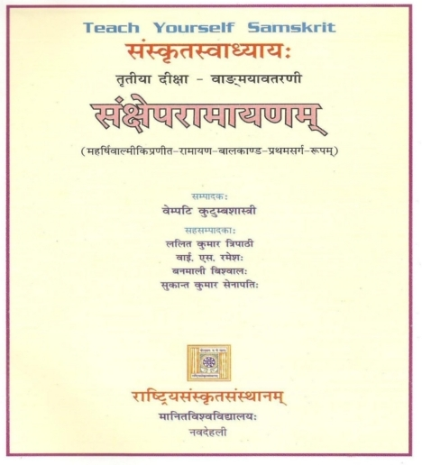

Welcome to the e-version of Saṅkṣēpa rāmāyaṇam. The e-version captures the salient features of the book viz.
- पदपाठः (padapāṭhaḥ)
- पदपरिचयः (padaparicayaḥ)
- आकाङ्क्षा (ākāṅkṣā)
- अन्वयः (anvayaḥ)
style of understanding a text, and present them in the e-form.
The advantage of e-version is that the reader has full control over the interface and can choose to display only the relevent part. The department of Sanskrit Studies, in addition has provided the pictorial representation of the कारक (kāraka) analysis as well as समास (samāsa) analysis.
The समास-विग्रह (samāsa-vigrah) is available as a tool-tip along with the picture showing the composition. By placing a cursor on the समास (samāsa), one gets this information. The कारक (kāraka) analysis is available as a link to the sentence numbers.
|

|
|
Rashtriya Sanskrit Sansthan |
Department of Sanskrit Studies |
|
|
|
Best view:1366 X 768 (16:9)
Browser compatibility: Firefox 3+ (Recommended), Chrome, Opera, Internet Explorer 8
© 2002-2022 Amba Kulkarni